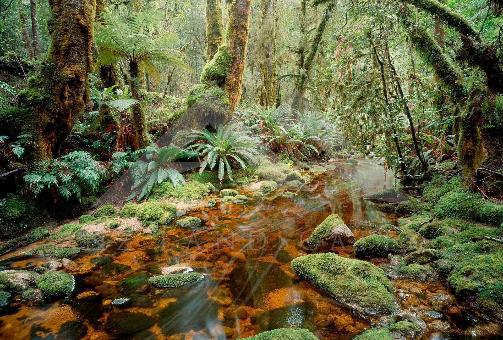
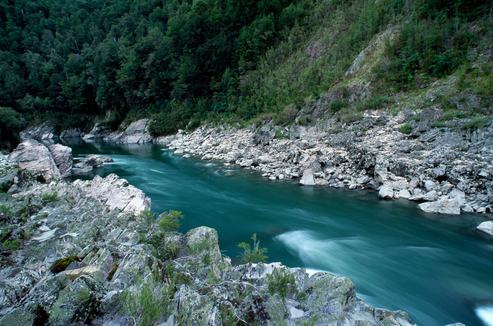
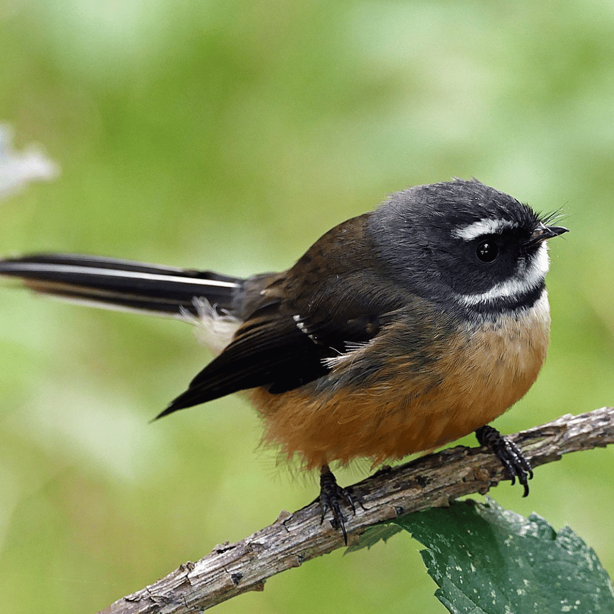

Understanding Kaitiakitanga
Kaitiakitanga is a foundational Māori concept centered on guardianship, protection, and the deeply rooted care for the natural environment. A person, family, or tribal group who holds this ancestral responsibility as a guardian is known as a kaitiaki, acting as a caretaker of the land's life force.
This practice recognises that humans are an essential part of nature, not separate from it, creating vital responsibilities toward the natural world. This includes actively managing and preserving whenua (land), wai (waterways), native plants, and wildlife through sustainable, traditional practices.
Protecting the environment is essential because human well-being is directly intertwined with the health of our ecosystems. By maintaining ecological balance, we secure vital resources, clean water, and fertile soil, preserving these *taonga* (treasures) to sustain both current communities and future generations.

Whenua
Protecting and caring for the land and native forests.

Wai
Keeping waterways healthy and protecting freshwater ecosystems.

Wildlife
Protecting native species and the ecosystems they depend on.
Care
Actively managing and restoring local ecosystems while preventing unnecessary damage to keep natural habitats thriving and healthy.
Responsibility
Understanding that people are interconnected with nature and have a duty to uphold the balance between human needs and environmental preservation.
Future Generations
Practicing sustainable guardianship to ensure that ancestral lands, pristine waters, and diverse wildlife survive for tomorrow's generations to enjoy.
Our Responsibility
Kaitiakitanga reminds us that protecting the environment is not only about today. It is also about making sure Aotearoa remains healthy for the future.